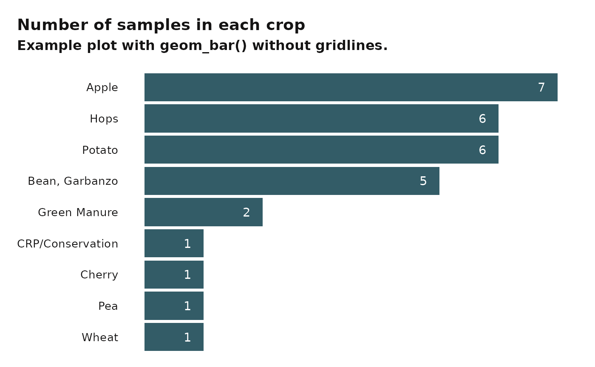
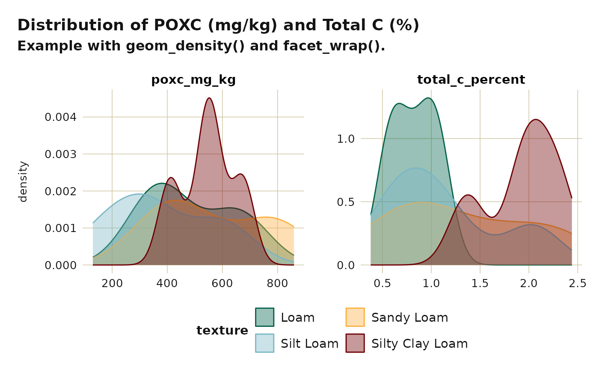
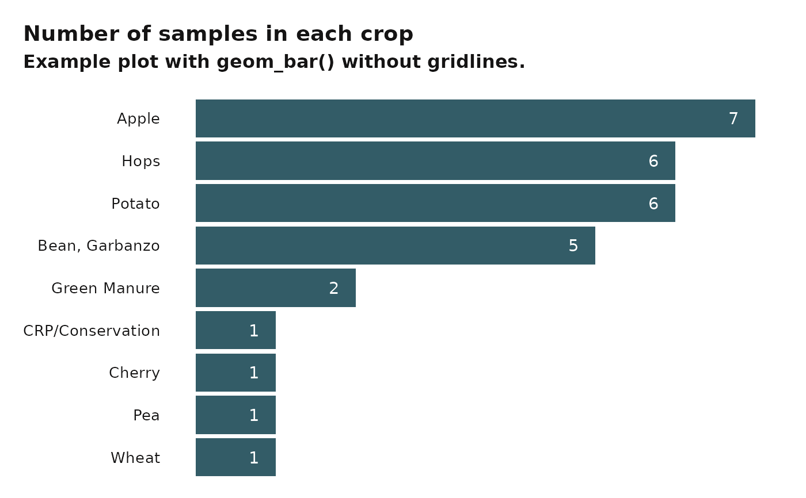
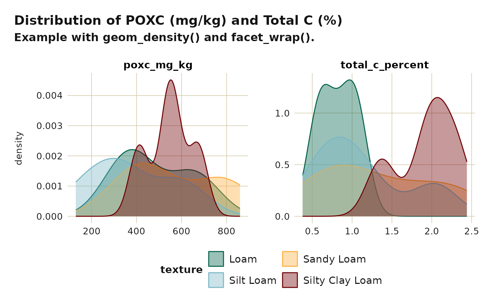

All changed defaults from this function can be overridden by another
call to ggplot2::theme() with the desired changes.
Usage
washi_theme(
header_font = "Lato Black",
header_color = "#151414",
body_font = "Poppins",
body_color = "#151414",
text_scale = 1,
legend_position = "top",
facet_space = 2,
color_gridline = washi_pal[["standard"]][["tan"]],
gridline_y = TRUE,
gridline_x = TRUE,
...
)Arguments
- header_font
Font family for title and subtitle. Defaults to "Lato Black".
- header_color
Font color for title and subtitle. Defaults to almost black.
- body_font
Font family for all other text Defaults to "Poppins".
- body_color
Font color for all other text Defaults to almost black.
- text_scale
Scalar that will grow/shrink all text defined within.
- legend_position
Position of legend ("none", "left", "right", "bottom", "top", or two-element numeric vector). Defaults to "top".
- facet_space
Controls how far apart facets are from each other.
- color_gridline
Gridline color. Defaults to WaSHI tan.
- gridline_y
Boolean indicating whether major gridlines are displayed for the y axis. Default is TRUE.
- gridline_x
Boolean indicating whether major gridlines are displayed for the x axis. Default is TRUE.
- ...
Pass any parameters from theme that are not already defined within.
See also
Other ggplot2 functions:
washi_scale()
Examples
library(ggplot2)
# NOTE: These examples do not use Poppins or Lato in order to pass
# automated checks on computers without these fonts installed.
# Single geom_point plot
example_data_wide |>
subset(crop %in% c("Apple", "Cherry", "Potato")) |>
ggplot(aes(x = ph, y = mn_mg_kg, color = crop)) +
labs(
title = "Scatter plot of pH and Mn (mg/kg)",
subtitle = "Example with geom_point().",
caption = "This is a caption."
) +
geom_point(size = 2.5) +
washi_theme(
header_font = "sans",
body_font = "sans"
) +
washi_scale()
 # Bar plot
if (requireNamespace("forcats")) {
example_data_wide |>
ggplot(aes(x = forcats::fct_rev(forcats::fct_infreq(crop)))) +
geom_bar(fill = washi_pal[["standard"]][["blue"]]) +
geom_text(
aes(
y = after_stat(count),
label = after_stat(count)
),
stat = "count",
hjust = 2.5,
color = "white"
) +
# Flip coordinates to accommodate long crop names
coord_flip() +
labs(
title = "Number of samples in each crop",
subtitle = "Example plot with geom_bar() without gridlines.",
y = NULL,
x = NULL
) +
# Turn gridlines off
washi_theme(
gridline_y = FALSE,
gridline_x = FALSE,
header_font = "sans",
body_font = "sans"
) +
# Remove x-axis
theme(axis.text.x = element_blank())
}

# Facetted geom_density plots
example_data_long |>
subset(measurement %in% c("total_c_percent", "poxc_mg_kg") &
!texture == "Loamy Sand") |>
ggplot(aes(x = value, fill = texture, color = texture)) +
labs(
title = "Distribution of POXC (mg/kg) and Total C (%)",
subtitle = "Example with geom_density() and facet_wrap()."
) +
geom_density(alpha = 0.4) +
facet_wrap(. ~ measurement, scales = "free") +
washi_theme(
legend_position = "bottom",
header_font = "sans",
body_font = "sans"
) +
washi_scale() +
xlab(NULL) +
guides(col = guide_legend(nrow = 2, byrow = TRUE))

# Bar plot
if (requireNamespace("forcats")) {
example_data_wide |>
ggplot(aes(x = forcats::fct_rev(forcats::fct_infreq(crop)))) +
geom_bar(fill = washi_pal[["standard"]][["blue"]]) +
geom_text(
aes(
y = after_stat(count),
label = after_stat(count)
),
stat = "count",
hjust = 2.5,
color = "white"
) +
# Flip coordinates to accommodate long crop names
coord_flip() +
labs(
title = "Number of samples in each crop",
subtitle = "Example plot with geom_bar() without gridlines.",
y = NULL,
x = NULL
) +
# Turn gridlines off
washi_theme(
gridline_y = FALSE,
gridline_x = FALSE,
header_font = "sans",
body_font = "sans"
) +
# Remove x-axis
theme(axis.text.x = element_blank())
}

# Facetted geom_density plots
example_data_long |>
subset(measurement %in% c("total_c_percent", "poxc_mg_kg") &
!texture == "Loamy Sand") |>
ggplot(aes(x = value, fill = texture, color = texture)) +
labs(
title = "Distribution of POXC (mg/kg) and Total C (%)",
subtitle = "Example with geom_density() and facet_wrap()."
) +
geom_density(alpha = 0.4) +
facet_wrap(. ~ measurement, scales = "free") +
washi_theme(
legend_position = "bottom",
header_font = "sans",
body_font = "sans"
) +
washi_scale() +
xlab(NULL) +
guides(col = guide_legend(nrow = 2, byrow = TRUE))
